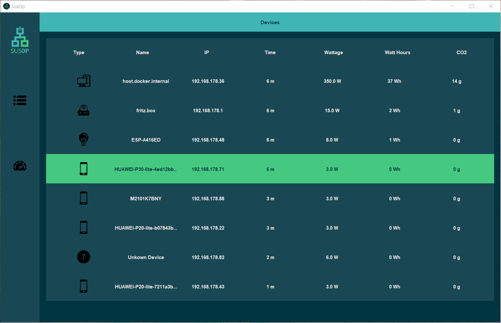
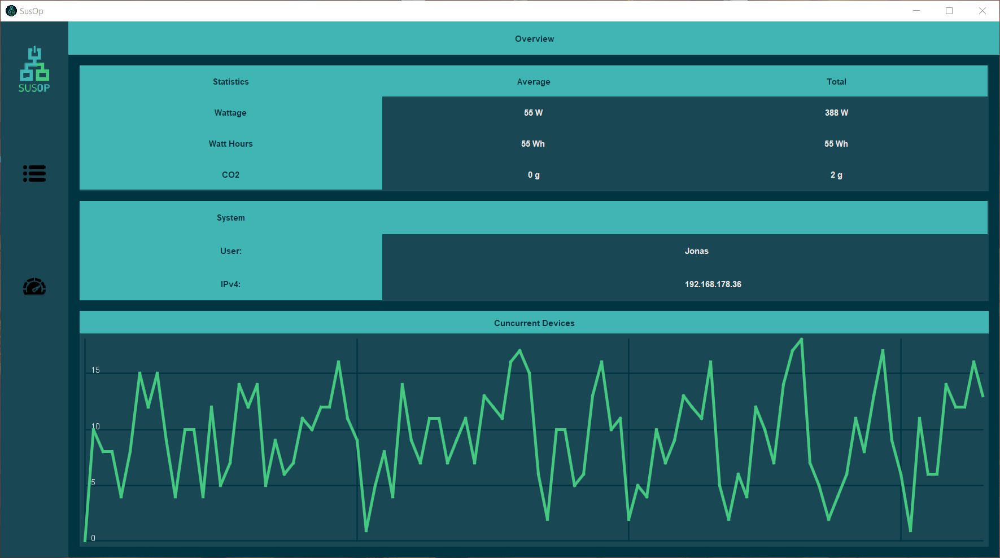

Feel free to check out more my
GithubThis page shows a few non-game projects and neat code snippets, which are part of unreleased games.
SusOp
2021
2 Team Members
Available on Github

Weekend Hackathon
View on Github
Network Monitor
Susatainability
power consumption
Java Swing
UI/UX
Read More
is a project I made with a friend for the hackaTUM 2021 hackathon.
It is a climate conscious network monitor, which keeps track of the CO2 produced by the devices running in the LAN. It is a neat little piece of software ment to increase climate change awareness.
My main contributions were in UI/UX and general desktop development, while my buddy handled networking.
Code available on Github.
Click on Screenshots to view
 
Raytracer
2021
Solo Development
Weekend Project
Graphics Programming
Software Raytracing
Linear Algebra
Java
Read More
A software raytracer (running on the CPU using Java). It supports multi-threading, spheres, skydomes, planes and phong-lighting.
I made it in order to manually explore the mathematical principles behind the methods shading languages such as glsl and hlsl provide by default.
Click on Screenshot to view
Granular Audio Synthesis
2022
Made using Unity
Solo Development
Available on Github
Weekend Project
View on Github
Audio Programming
Granular Synthesis
Signal Processing
C#
Read More
More specifically it makes use of granulation of sampled sound. The script doesn't speed up or pitch shift the input sound, but traverses it based on engine RPM.
It separates an input sound into smaller sections called grains and adjusts them to avoid clipping. During runtime it chooses a grain, which resembles the desired RPM of the virtual engine. To make the granulation less noticeable, grains are cross faded (through so called envelopes) and some variation (in the form of slightly randomized RPM) is added.
There are lots of opportunities for improvement, as this is just a small experiment. Specifically I'm looking into Dave Stevensons' comprehensive explanation of adjusting grain boundaries based on analysis of the frequency space.
The current script is available on Github
HOSAS Input Management
2023
Made using Unity
Solo Development
Available on Github
Weekend Project
View on Github
Input
Joystick
HOSAS
Fligh Sim
T16000M
Read More
By default Unity does not recognize the difference between left- and right handed fight sticks. There is however a suitable system for XR-Controllers in the form of Configuration Usage Tags.
These scripts automatically assigns a side to Thrustmaster T16000M sticks by reading the value of the little switch on the bottom.
Additionally the sides get updated automatically at runtime, should the switch be flipped again - or another device be plugged in.
The current script is available on Github.
This Portfolio Website
2023
Solo Development
Available on Github
Ongoing Project
View on Github
Portfolio
Blog
Website
Web Dev
UI/UX
Read More
Its main purpose is to showcase my projects and display my resume, whithout any fancy design shenanigans getting in the way. That said, I still aimed for a modern style.
The current script is available on Github.
Light Probe Placer Editor Tool
2023
Made using Unity
Solo Development
Available on Github
Weekend Project
View on Github
Tool Dev
Editor
Level Design
Lighting
Read More
Placing each light probe of a group by hand is tedious and boring.
This tool automatically places them in a grid pattern, within a box, optionally avoiding intersections with scene geometry.
This tool doesn't do much, but it helps speed up my workflow significantly. The current script is available on Github.